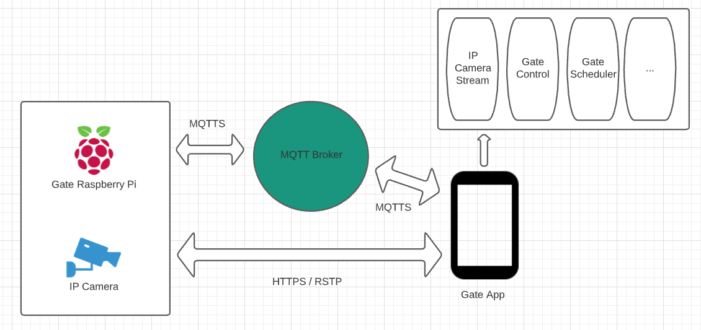

I recently fitted an electric gate in our house to make sure the children are safe. I also wanted to find
an affordable way to install an electric gate in our home.
The only issue was the gate can be only controlled by an infrared remote.
Given I am a software engineer, I thought I surely could improve that.
So I did a bit of research and I discovered that I can fit a relay to the gate motherboard.
And so the fun began.
It started as a simple app to open and close the gate but then I love automation so that much I added
cabablity to schedule the
opening and closing of the gate. Then it evolved to add an IP camera pointing to the gate that I can
connect to it and see the gate live from the app.
So here is a short summary of the development journey.
Components
- Raspberry Pi
- Raspberry Pi Relay Board
- IP Camera
- MQTT Broker
- Android Phone or an iPhone
Design

Application
The main screen is made of multiple parts:
- Gate functions:
- Open
Hold the gate open
- Open and Close
Open the gate for two minutes and closes it automatically afterwards.
- Close
Closes the gate
- MQTT Connection Status
- Gate Camera View
- Other functions
The relay board I am using is made of three channels, one used for the gate, and I have two spare
channels
that can be used for different purpose like light automation.
The Schedule Screen is made to set a schedule for the gate with a specific function e.g. open the gate
every day at 8 O'clock in the morning.
There are four options when adding a schedule:
- Choose the time
- Choose the period
Trigger Only once, every day, week days or weekend
- Choose the relay
Gate, Relay 2 or Relay 3
- Choose the action
Open, Close, Open&Close, On, Off or Signal.
You can also delete the schedule.
Development
This page is still under contruction 🚧 the content for this section will be provided soon!
Improvments
As this still in working progress, I am planning on implementing the below in the near future:
- Pairing capabilities e.g. Set up the gate internet connection and other settings via the app
- Integrate with Google Assistant, Alexa and Siri to control the gate via voice command
- Integrate with Nest Hello Doorbell by Google and Ring Video Doorbell by Amazon